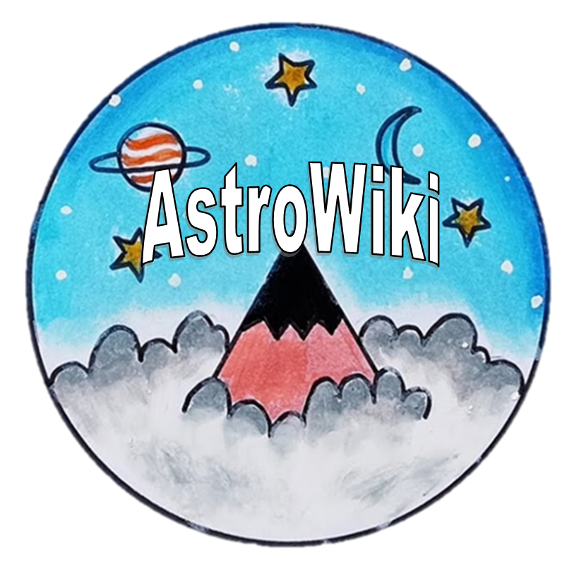

Bienvenido a AstroWiki, el espacio donde la curiosidad se encuentra con el cosmos. Aquí encontrarás información fascinante sobre planetas, estrellas, galaxias, entre otros. Haz click en el botón de menú (=) y encontrarás los temas astronómicos de tu interés.